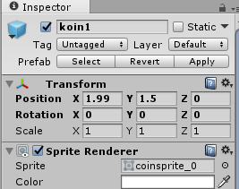
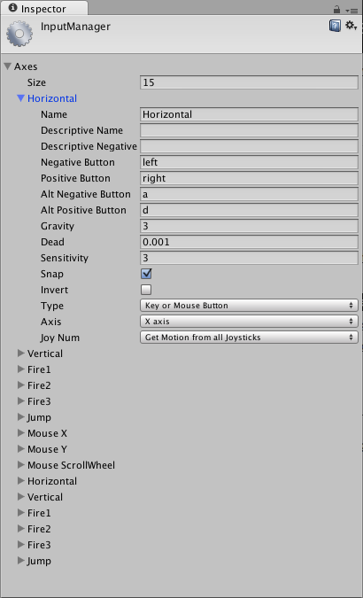

3. Animation sprite 2D
Pendahuluan
Pada praktikum ke-3 ini, kita akan melanjutkan project “Latihan3_2D” yang pertemuan sebelumnya sudah dibuat. Beberapa teknik pemrograman dasar game 2D sudah kita pelajari, namun demikian masih ada beberapa hal seperti, membuat animasi 2D, prefabs, kontrol game dan yang paling penting adalah membuat deteksi tumbukan (collision detection). Modul praktikum ini didesain dengan model pembelajaran terurut dan runtun, jadi pastikan kamu membaca dari awal hingga akhir begitu juga dengan praktikum yang ada (JANGAN MELOMPAT-LOMPAT SAAT MEMBACA DAN MENGIKUTI PRAKTIKUM MODUL INI). Setelah pertemuan ke-3 ini, kamu akan bisa secara mandiri membuat game 2D dengan berbagai macam game mekanik.
Animation sprite 2D
Animasi gambar sprite terdiri dari susunan berbagai gambar dengan bentuk atau transformasi yang saling berkesinambungan satu sama lain. Berikut adalah contoh dari susunan gambar yang dapat di animasikan :
Ada dua bentuk gambar sprite. Pertama, gambar sprite yang berada dalam file gambar berbeda-beda namun berkesinambungan. Kedua, gambar sprite yang berisi banyak gambar berkesinambungan tetapi tetap pada satu file gambar. Teknik untuk membuat bentuk gambar sprite yang kedua, terkadang dikenal dengan istilah texture atlasing. Terdapat perlakuan yang berbeda antara bentuk gambar sprite yang pertama dan berbeda. Namun demikian, disini kita akan gunakan cara yang paling mudah yaitu menggunakan bentuk gambar sprite yang kedua.
PRAKTIKUM:
- Tambahkan asset game “coinsprite.png” kedalam project Window.
- Masukkan kedalam folder Images.
- Klik “coinsprite” pada project window (perhatikan bahwa jangan masukkan ke scene dulu)
- Lihat pada Inspector: Ganti Sprite Mode pada Inspector dengan nilai “Multiple”, seperti gambar berikut.
- Kemudian kembali ke project window, klik pada bagian panah kanan pada coinsprite seperti yang terlihat pada gambar berikut:
- Sekarang lihat Inspector, Klik pada tombol “Sprite Editor” dan jika ditanya “Apply and continue to sprite editor or cancel” pilih “apply”. Berikut adalah tampilan dari Sprite Editor:
- Disebelah kiri atas dari sprite editor terdapat tulisan “Slice”. Klik pada tulisan tersebut, sehingga akan muncul box seperti berikut:
- Pastikan Type adalah Automatic, Pivot adalah Center, dan Method adalah Delete Existing. Kemudian klik tombol Slice.
- Jika sudah maka lihat disebelah kanan dari tab slice bahwa tulisan Revert dan Apply sudah menyala. Kemudian tekan Apply seperti gambar berikut:
- Close Sprite Editor dan lihat pada Project Window. Jika pemotongan berhasil maka akan muncul banyak gambar dari coinsprite:
- Selanjutnya adalah drag coinsprite dari Project Window ke Scene View.
- Selanjutnya akan muncul box penyimpanan animasi dan simpan dengan nama “animkoin” seperti gambar berikut:
- Jalankan Unity dan lihat pada Game tab.
KUMPULKAN:
Screenshoot Game tab dan simpan dengan nama sc_03_01.jpg
Memposisikan Game Object Pada Scene
Untuk memposisikan game objek dengan mudah klik pada game object di hierarcy window atau scene view. Untuk memilih beberapa objek untuk dipindahkan tahan shift dan klik game objek mana saja yang akan di pindah. Gunakan transform tools untuk memindahkan (move), memutar (rotate), menskala (scale), atau transformasi bidang segi empat (rectTransform) yang ditunjukkan oleh gambar berikut:

Move Transform
Digunakan untuk memindahkan objek 2D atau 3D pada scene. Panah merah berkaitan dengan posisi sumbu x untuk memindahkan objek sejajar dengan arah sumbu x. Panah hijau berkaitan dengan sumbu y untuk memindahkan objek sejajar dengan arah sumbu y. Panah biru berkaitan dengan sumbu z untuk memindahkan objek sejajar dengan arah sumbu z. Terakhir adalah gambar kubus atau persegi ditengah-tengah panah tersebut, berguna untuk mindahkan objek secara bebas tidak terkait dengan sumbu manapun. Berikut adalah ilustrasi gambar dari penggunaan move transform:

Untuk mengaktifkan mode ini gunakan tombol W pada keyboard.
Rotate Transform
Digunakan untuk memutar objek 2D atau 3D pada scene. Panah merah berkaitan dengan rotasi sumbu x untuk memutar objek sejajar dengan arah sumbu x. Panah hijau berkaitan dengan rotasi sumbu y untuk memutar objek sejajar dengan arah sumbu y. Panah biru berkaitan dengan rotasi sumbu z untuk memutar objek sejajar dengan arah sumbu z. Berikut adalah ilustrasi gambar dari penggunaan rotate transform:
Untuk mengaktifkan mode ini gunakan tombol E pada keyboard.
Scale Transform
Digunakan untuk menskala objek 2D atau 3D pada scene. Panah merah berkaitan dengan skala sumbu x untuk menskala objek sejajar dengan arah sumbu x. Panah hijau berkaitan dengan menskala sumbu y untuk memutar objek sejajar dengan arah sumbu y. Panah biru berkaitan dengan menskala sumbu z untuk memutar objek sejajar dengan arah sumbu z. Berikut adalah ilustrasi gambar dari penggunaan scale transform:
Untuk mengaktifkan mode ini gunakan tombol R pada keyboard.
Rect Transform
Digunakan untuk memindahkan sekaligus menskala objek 2D atau 3D pada scene. Berikut adalah ilustrasi gambar dari penggunaan rect transform:
Untuk mengaktifkan mode ini gunakan tombol T pada keyboard.
Prefabs
Prefabs merupakan tipe aset game yang dapat menyimpan game object dengan konfigurasi komponen property yang dapat disesuaikan. Sebagai contoh, ketika kita sudah terlanjur membuat banyak koin dengan komponen properti yang sama (duplikat) didalam scene dan kemudian kita ingin mengganti salah satu komponen properti pada setiap koin. Pertanyaannya adalah apakah kita akan merubah satu persatu komponen properti yang ada setiap koin tersebut?. Hal itu tentu sangat tidak efisien. Untuk mengatasi permasalahan tersebut, unity memiliki solusi yaitu dengan membuat objek koin menjadi prefabs. Dengan hanya merubah salah satu prefab koin, maka prefab koin-koin yang lain akan secara otomatis merubah juga.
PRAKTIKUM:
- Buat game object “koin1”, “koin2”, “koin3”, “koin4”, “koin5”, “koin6”, “koin7”. Untuk menduplikat game objek di hierarchy window, klik pada salah satu object, tekan ctrl+d.
- Gunakan Transform tool untuk memindahkan setiap objek koin. Berikut adalah contoh scene view dari penyebaran objek koin.

- Buat script baru dengan nama “CoinMove”, dengan rincian kode sebagai berikut:
- Masukkan CoinMove kedalam Game Object “Koin1”. Isikan speed pada Inspector Koin1 dengan nilai 3.
- Jalankan Unity dan lihat apa yang terjadi.
- Timbul pertanyaan, “Jika kita ingin merubah semua koin, apakah kita harus memasukkan kode CoinMove dan mengisikan speed disemua koin? Lalu bagaimana jika koin tersebut tidak Cuma 10 tapi ratusan atau ribuan?”
- Jawabannya adalah dengan prefab. Buat folder Prefabs di dalam Project Window. Jika sudah ada masuk pada folder tersebut.
- Tarik koin2 (dimana belum diberi kode program CoinMove) kedalam folder Prefabs pada Project Window. Amati koin2 pada Hierarchy window, jika pembuatan prefab berhasil maka tulisan koin2 menjadi bewarna biru.
- Hapus game object “koin1”,”koin3”,”koin4”,”koin5”,”koin6”, dan “koin7”.
- Duplikat “koin2” dimana “koin2” sekarang adalah sebuah prefab.
- Rename semua game object koin menjadi “koin1”, “koin2”, “koin3”, “koin4”, “koin5”, “koin6”, “koin7”, seperti gambar berikut:
- Rubah posisi setiap koin dengan transform tool.
- Masukkan kode “CoinMove” pada game object “Koin1” dan isikan pada Inspector Koin1 speed dengan nilai 3.
- Masih di Inspector Koin1, lihat bagian atas, klik tombol Apply.

- Jalankan Unity dan lihat pada Game tab.
KUMPULKAN:
Screenshoot Game tab dan simpan dengan nama sc_03_02.jpg
Kendali Game Object 2D
Untuk mengendalikan pergerakan game object, biasanya kita menggunakan berbagai metode input seperti: input keyboard, input mouse, input joystick, touchscreen, dll. Unity mendukung hampir semua jenis metode input, termasuk untuk input perangkat virtual reality. Unity juga mendukung lebih dari satu jenis metode input dalam satu game. Sebagai contoh, game flappy bird, jika dimainkan di computer akan menggunakan tombol spasi untuk input, atau mouse click atau touchscreen pada smartphone. Pemrograman Input Unity menggunakan dua metode umum yaitu dengan virtual axes dan Keys.
Virtual Axes
Virtual axes memperbolehkan akses media input dengan nama yang sudah didefinisikan. Biasanya secara default unity sudah memberikan beberapa nama ini seperti, horizontal, vertical, Fire1, Fire2, dll pada Input Manager. Untuk melihat konfigurasi ini akses Edit->Project Settings->Input lihat inspector seperti gambar berikut:

Untuk menggunakan virtual axes dapat dilakukan seperti kode berikut: (biasanya kode ini diletakan didalam method Update())
if (Input.GetAxis ("Horizontal")) {
//jalankan objek ke kanan dengan a atau d atau arah kanan atau kiri
} Input.GetAxis merupakan kode untuk memanggil virtual axes dengan isian parameter nama yang sudah didefinisikan pada Input Manager.
Keys
Metode Input selanjutnya adalah menggunakan Keys. Keys harus berisi parameter yang mengikuti aturan baku unity. (detail: https://docs.unity3d.com/Manual/ConventionalGameInput.html ). Misalnya untuk key normal “a”,”b”,”c” (Maksudnya adalah “a” untuk input keyboard “a”). berikut adalah contoh penggunaan keys : (biasanya kode ini diletakan didalam method Update())
if(Input.GetKey(KeyCode.D)) {
// jalankan objek ke kanan dengan menekan tombol D dikeyboard
}Collision Detection 2D
Didalam game digital, tumbukan antar objek sangatlah penting untuk interaktivitas objek didalam game. Deteksi tumbukan antar object ini biasanya menggunakan physics engine. Physics engine untuk melihat sebuah efek simulasi fisika dalam game. Dalam unity 2D, physics engine diatur dengan komponen Rigidbody2D dan Collider2D.
RigidBody 2D
Rigidbody 2D diletakkan pada game object 2D untuk memiliki perilaku simulasi fisika seperti: terpengaruh gravitasi, memiliki massa, dan pengaturan kecepatan gerakan. Ada tiga bentuk body dalam Rigidbody 2D yaitu Dynamic, static, dan kinematic.
Dynamic: Untuk objek yang bisa bergerak dengan simulasi fisika.
Static: Untuk objek yang tetap (tidak bergerak)
Kinematic: Untuk objek yang bisa bergerak dengan fungsi khusus seperti Translate atau Rotate.
Berikut adalah cara menambahkan rigidbody 2D pada sebuah game object. Dalam praktikum ini, kita akan menggunakan project Latihan3_2D, dimana kita sudah memiliki object “Player”. Untuk menambahkan rigidbody 2D pada Player pertama, klik Player pada Scene atau hierarchy window. Kemudian masuk ke inspector dan klik Add Component. Ketikkan “Rigidbody2D” lalu tekan ENTER.
Uncheck simulated untuk melihat game objek yang tidak terpengaruh oleh gravitasi. Material physic merupakan masukan untuk membuat material fisika seperti memantul, solid, dan sebagainya. Namun demikian, material physic tidak akan dijelaskan lebih lanjut. Mass untuk mengatur massa jenis object dan Gravity Scale 0 sampai 1 atau uncheck atau check untuk menggunakan gravitasi.
Collider 2D
Collider 2D merupakan komponen unity yang bertugas untuk memberikan ruang batasan pada sebuah game object untuk dapat melakukan tumbukan fisik. Collider 2D dapat juga dibuat tidak terlihat namun tetap bisa berlaku tumbukan walaupun hanya dijadikan sebuah trigger penanda. Beberapa collider 2D yang sering digunakan adalah sebagai berikut:
Circle collider 2D untuk game objek yang berbentuk lingkaran
Box collider 2D untuk game objek yang berbentuk kotak persegi atau persegi panjang
Polygon Collider 2D untuk game objek dengan sembarang bentuk
Capsule Collider 2D untuk game objek berbentuk kapsul
Cara untuk menambahkan komponen Collider2D mirip dengan RigidBody. Sebagai contoh, dengan game object “Player”, ketikkan “Polygon Collider 2D” pada saat Add Component, lalu ENTER.
Pada scene view seharusnya ada suatu gambar bergaris bewarna hijau yang artinya game object tersebut sudah diberi collider 2D.
Syarat terjadinya tumbukan adalah adanya collider 2D di kedua objek yang akan bertumbukan. Disamping itu, salah satu dari game object tersebut harus memiliki Rigidbody 2D.
PRAKTIKUM:
- Tambahkan Rigidbody 2D dan Polygon Collider 2D pada object “Player”.
- Tambahkan Polygon Collider 2D pada object “Enemy”.
- Pada pertemuan sebelumnya sudah ada script bernama “ObjectMovement”. Tambahkan method baru OnCollisionEnter, OnCollisionStay, dan OnCollisionExit. Perhatikan bahwa method ini harus ditulis dengan benar karena termasuk dalam method yang sudah ditentukan unity (lihat modul pertemuan 3).
void OnCollisionEnter2D(Collision2D coll) {
}
void OnCollisionStay2D(Collision2D coll) {
}
void OnCollisionExit2D(Collision2D coll) {
} - Buat tag baru dengan nama “playerTag” dan “enemyTag” dengan cara klik sembarang game object. Masuk Inspector dan klik pada tombol untagged->Add tag, seperti gambar berikut:
Klik symbol + untuk menambah tag dan – untuk menghapus tag. Pastikan tag sudah ditambahkan dengan nama seperti berikut (case sensitive):
- Atur tag playerTag didalam object Player dengan cara, klik untagged di Inspector dan pilih playerTag, seperti gambar berikut:
- Atur tag enemyTag didalam object Enemy seperti cara langkah ke-5.
- Lengkapi method OnCollisionEnter2D, OnCollisionStay2D,dan OnCollisionExit2D seperti kode berikut:
void OnCollisionEnter2D(Collision2D coll) {
if (coll.gameObject.tag == "enemyTag") {
Debug.Log ("Mulai Nabrak");
}
}
void OnCollisionStay2D(Collision2D coll) {
if (coll.gameObject.tag == "enemyTag") {
Debug.Log ("Sedang Nabrak");
}
}
void OnCollisionExit2D(Collision2D coll) {
if (coll.gameObject.tag == "enemyTag") {
Debug.Log ("Sudah Nabrak");
}
}coll.gameObject.tag == “enemyTag” digunakan untuk mencari game object mana yang bertumbukan dengan game objek Player melalui nama tag.
- Pastikan bahwa ObjectMovement script sudah ada didalam komponen Inspector dari object Player.
- Jalankan unity dan lihat apa yang terjadi pada Console Output.
KUMPULKAN:
- Screenshoot Console Output dan simpan dengan nama sc_03_03.jpg
Latihan
- Tambahkan variabel baru pada “ObjectMovement” dengan nama score dengan tipe data integer.
- Buat tag baru dengan nama “coinTag” dan atur pada game object prefab koin1 sampai koin7.
- Edit kode berikut:
if (coll.gameObject.tag == "enemyTag") {
Debug.Log ("Mulai Nabrak");
}
menjadi
if (coll.gameObject.tag == "enemyTag") {
Debug.Log ("Game over");
Time.timeScale = 0;
}- Tambahkan kode jika menabrak “coinTag” maka score akan selalu bertambah 1 dan Outputkan Score dengan Debug.Log.
- Lengkapi kode program yang masih di-comment berikut: (praktikum ini berkaitan dengan praktikum sebelumnya)
- Jalankan unity dan simulasikan gerak kekanan kekiri dan lain-lain dengan tombol keyboard yang sudah ditentukan.
KUMPULKAN:
Screenshoot game tab dan simpan dengan nama sc_03_04.jpg
REFERENSI
- https://docs.unity3d.com/550/Documentation/Manual/Toolbar.html
- https://docs.unity3d.com/550/Documentation/Manual/PositioningGameObjects.html
- https://docs.unity3d.com/Manual/Prefabs.html
- https://docs.unity3d.com/Manual/ConventionalGameInput.html
- https://docs.unity3d.com/Manual/class-Rigidbody2D.html
- https://docs.unity3d.com/Manual/Collider2D.html
- https://docs.unity3d.com/ScriptReference/MonoBehaviour.OnCollisionEnter2D.html
Mekanisme Pengumpulan Praktikum Mingguan
Untuk setiap mahasiswa: Buat 1 folder beri nama NIM lengkap. Masukkan file screenshot sc_03_01.jpg, sc_03_02.jpg, sc_03_03.jpg, dan sc_03_04.jpg. Kemudian rar atau zip folder NIM kamu tadi dan kirimkan ke ketua kelas.
Contoh: A11200904997.rar
Untuk Ketua Kelas: SIapkan folder dengan nama Kode Kelas “_03” yang berisi kumpulan praktikum setiap mahasiswa. Lalu buat rar atau zip dan kirimkan ke email dosen.
Contoh: A114401_03.rar